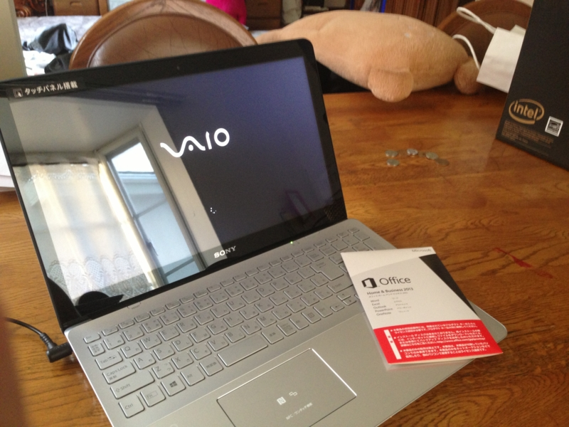
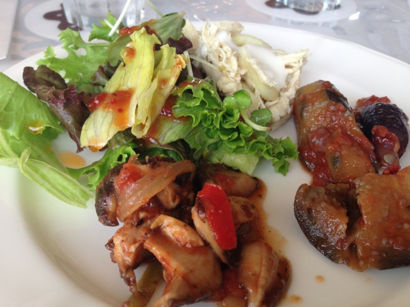

実家のノーパソ買い替えに付き合わされた
公開日：

「ノーパソ壊れたから、新しいのがほしい」という連絡が、実家からあった。ちなみにその“壊れたノーパソ”というのは、僕からタダで召し上げた Mac Book Pro である。泣きたい。

最初はほしいスペックだけ聞いて適当に Web で注文しようと思ったのだけれど、おかんが「実際に触って決めたい」「家に帰ってすぐに使えるようにしてほしい」というので、クルマで千葉のヨドバシカメラへ向かった……のだけど、検見川で妹と合流し、稲毛海岸で昼食をとってるうちに、渋滞の中を千葉まで行くのが面倒くさくなり、近所のコジマデンキに寄った。
 VAIO Fit 15 (15.5型タッチ) SVF15A18CJS")
ソニー(VAIO) VAIO Fit 15 (15.5型タッチ) SVF15A18CJS
- 出版社/メーカー: ソニー(SONY)
- 発売日: 2013/05/18
- メディア: Personal Computers
- この商品を含むブログを見る
いろいろ見て歩くに、コレが気に入ったらしい。パソコンを選ぶ際の優先基準はおおむね、
- 画面の大きさ（＋字が大きくなるか）
- 色（デザイン）
- スペック
- 値段
という感じだった。意外に色の比重が大きいのな。おかんは「なぜ同じ大きさのパソコンを並べて展示しないのか」と訝しがってたけど、普通はブランド別だよね。ちなみに、彼女が知っているブランドは VAIO だけだったが、別に知っているブランドだから買ったというわけではなく、「黒とか白はあまり好きじゃない」とらしく、シルバーのラインナップがあることが理由だったらしい。
僕にはあまり理解できない選択基準だ。NEC や Fujitsu のなかのひとが泣くぞ。
しかしまぁ、そのコジマデンキがしみったれた雰囲気で、しかも高い。おかんと妹が総掛かりで値切ったが、ヤマダデンキより高いことこそ認めたものの、「ポイントじゃないと値引きには応じられない」とのこと。今どきコジマのポイントカードなんか作ってもしょうがない。
とはいえ、お昼ごはんをたらふく食べて眠くなっていたし、早く家に帰って「艦これ」したかったので、「もう諦めて買っちゃえば？」と勧めた。しかし、どうも二人は諦めきれない。あっちこっちに電話で値段を聞き、結局ケーズデンキが5,000円安くしてくれるというのでそっちへ向かった。
スゴいバイタリティ。もはや、逆らえない。
そのケーズデンキの担当はなかなかいい人で、二人の値引き要求をうまく受け流しながら、逆に妹へ掃除機を買わせることに成功。僕もなぜか展示品処分の水筒を買っていた。意味がわからんが、これがマーケティングというものらしいな。来週から水筒男子として頑張ろう。
――さて、そんなこんなで買った VAIO Fit 15 だったのだけど、とんだクソトラブルに巻き込まれて、満足に使えるようにするまでかなり時間を要した。その話は今度気が向いたらしたい。